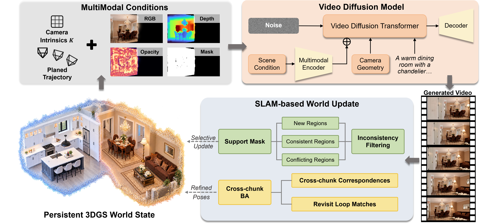
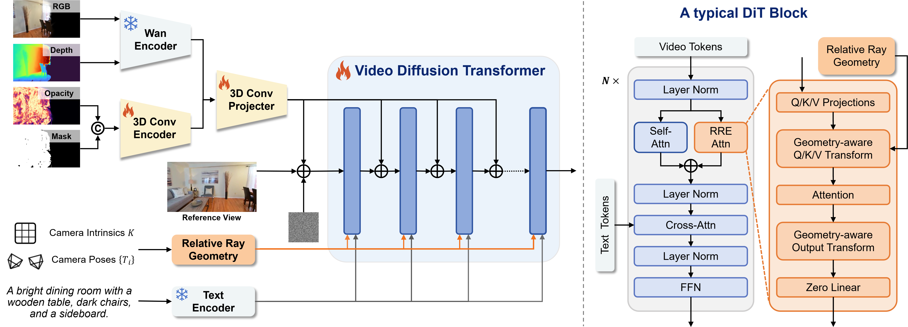
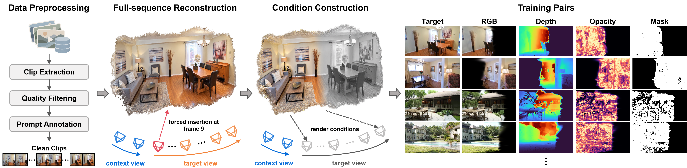
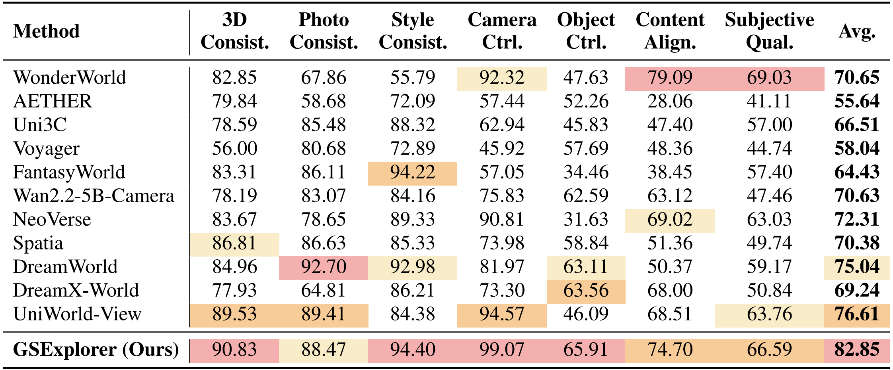
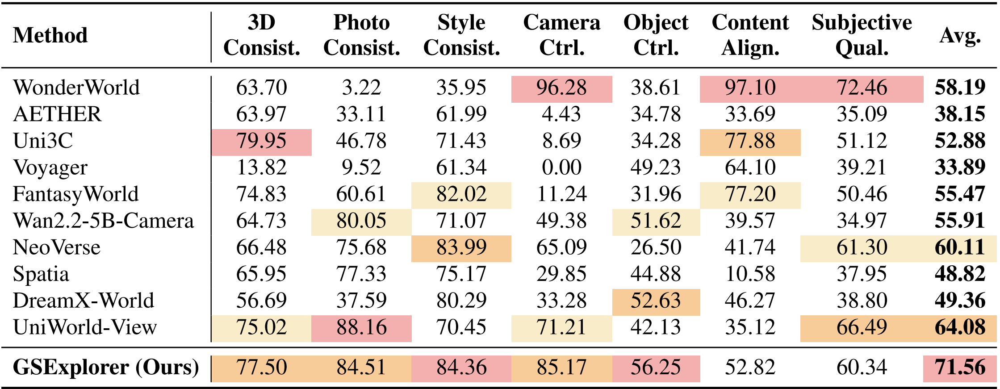

Render
RGB, depth, opacity, and hole masks provide spatially aligned scene conditions.
01 / OVERVIEW
Long-term spatial memory.
Local video generation.
Interactive world generation needs precise local control and lasting scene consistency across large viewpoint changes and long-horizon exploration.
Starting from a single image, GSExplorer generates videos from multimodal scene renderings, camera trajectories, and text prompts. A 3DGS-SLAM backend updates and maintains a persistent Gaussian world state, filtering conflicting observations and aligning new views with the scene’s history.
This generation–reconstruction loop lets the scene expand into unseen regions while preserving previously explored content—supporting accurate camera control and consistent long-horizon revisits.
Interactive world generation requires both accurate local control and stable scene consistency over long rollouts. Existing methods improve local generation through camera or geometry conditioning and extend historical context with memory mechanisms. However, long-horizon exploration remains challenging as target-view guidance becomes incomplete and inconsistencies accumulate across repeated scene updates. We present GSExplorer, a generation–reconstruction framework built around a persistent 3D Gaussian world state. At each step, the current 3DGS scene provides multimodal rendering conditions for a condition-driven video generator, while camera geometry is injected through a separate Relative Ray Encoding branch. Generated videos are then fed back to a SLAM-based reconstruction backend, where inconsistency filtering prevents conflicting content from corrupting the scene and cross-chunk bundle adjustment improves spatial alignment across generation steps. We further design a data-construction pipeline that reproduces realistic 3DGS degradation during scene extrapolation, yielding 293K training pairs of degraded multimodal renderings and real target videos. GSExplorer achieves the best overall performance among the compared methods on both single-step and three-step WorldScore evaluation, with strong camera control and consistency across both settings, including a Camera Control score of 99.07 in single-step extrapolation. On 481-frame leave-and-return rollouts, it also shows strong revisit consistency, demonstrating the value of maintaining a reliable 3D world state for continued exploration.
02 / METHOD
Render the world. Generate the next chunk. Update the scene.

RGB, depth, opacity, and hole masks provide spatially aligned scene conditions.
A video diffusion model combines scene conditions, text, and a separate Relative Ray Encoding branch.
A 3DGS-SLAM backend filters conflicting observations and aligns new and historical views to maintain the persistent world state.

Rendered RGB, depth, opacity, and hole masks are encoded as scene conditions and injected into the video diffusion backbone through one input projection and five residual projections. Camera intrinsics and poses provide ray-based geometric guidance through a separate Relative Ray Encoding (RRE) attention branch in every DiT block. Text prompts use the original Wan cross-attention pathway.
Separating pose from the other conditions improves their complementary control: the ablation study shows better camera following and overall performance than injecting them together. Rendered content guides scene completion, while the pose branch supplies cross-view geometric guidance.

To train a generator that completes imperfect scene renderings, we need degraded multimodal conditions paired with real target videos. The key is to reproduce realistic rendering degradation while keeping the rendered conditions pixel-aligned with the target videos.
03 / WORLD GENERATION
GSExplorer follows camera trajectories and text prompts accurately while preserving scene consistency across diverse viewpoint changes.
Select an input image
Continuous, coherent generation across chunks, with stable camera and prompt following as the world expands.
Select an input image
04 / LONG-HORIZON REVISIT
Stable generation through repeated extrapolation, with consistent recovery of previously explored views on return.
05 / EVALUATION
Higher is better except for LPIPS.


| Method | PSNR ↑ | SSIM ↑ | LPIPS ↓ | Match Ratio ↑ |
|---|---|---|---|---|
| UniWorld-View | 11.73 | 0.375 | 0.544 | 0.210 |
| DreamX-World | 12.02 | 0.417 | 0.649 | 0.131 |
| WonderWorld | 15.09 | 0.592 | 0.427 | 0.431 |
| Spatia | 17.86 | 0.565 | 0.415 | 0.423 |
| GSExplorer (Ours) | 19.85 | 0.623 | 0.369 | 0.481 |
06 / CITATION